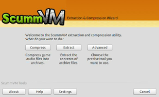
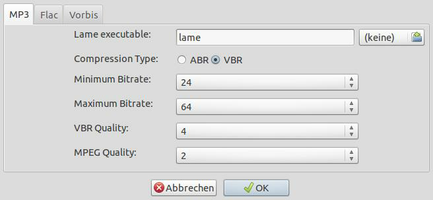

ScummVM Tools
Dieser Artikel wurde für die folgenden Ubuntu-Versionen getestet:
Ubuntu 14.04 Trusty Tahr
Zum Verständnis dieses Artikels sind folgende Seiten hilfreich:
In manchen Fällen benötigt man die ScummVM-Tools - eine nützliche Sammlung von Werkzeugen - die man von der Projektseite  als Quellcode herunterladen kann. Sie erlauben es unter anderem Dateien aus Spielen zu extrahieren, Audiodateien in ein anderes Format (z.B. flac, mp3 oder ogg) zu konvertieren und anschließend zu komprimieren sowie Videosequenzen für ScummVM nutzbar zu machen. Dies ist unter anderem mit Spielen, welche für den NES, Amiga, C64 oder Mac programmiert wurden möglich. Die Befehle können einzeln ausgeführt oder in Skripten eingepflegt werden.
als Quellcode herunterladen kann. Sie erlauben es unter anderem Dateien aus Spielen zu extrahieren, Audiodateien in ein anderes Format (z.B. flac, mp3 oder ogg) zu konvertieren und anschließend zu komprimieren sowie Videosequenzen für ScummVM nutzbar zu machen. Dies ist unter anderem mit Spielen, welche für den NES, Amiga, C64 oder Mac programmiert wurden möglich. Die Befehle können einzeln ausgeführt oder in Skripten eingepflegt werden.
|  |  |
| GUI | Einstellungen |
Installation¶
Quellcode¶
Vorbereitung¶
Die folgenden Pakete werden für den Vorgang benötigt [5]:
build-essential
checkinstall (universe)
g++
libboost-dev
libfaad-dev (universe)
libflac-dev
libfluidsynth-dev (universe)
libfreetype6-dev
libjpeg-turbo8-dev
libmad0-dev (universe)
libmp3lame-dev (universe)
libmpeg2-4-dev (universe)
libogg-dev
libpng12-dev
libsdl1.2-dev
libtheora-dev
libvorbis-dev
libvorbisidec-dev (universe)
libwxgtk3.0-dev (universe)
make
zlib1g-dev
 mit apturl
mit apturl
Paketliste zum Kopieren:
sudo apt-get install build-essential checkinstall g++ libboost-dev libfaad-dev libflac-dev libfluidsynth-dev libfreetype6-dev libjpeg-turbo8-dev libmad0-dev libmp3lame-dev libmpeg2-4-dev libogg-dev libpng12-dev libsdl1.2-dev libtheora-dev libvorbis-dev libvorbisidec-dev libwxgtk3.0-dev make zlib1g-dev
sudo aptitude install build-essential checkinstall g++ libboost-dev libfaad-dev libflac-dev libfluidsynth-dev libfreetype6-dev libjpeg-turbo8-dev libmad0-dev libmp3lame-dev libmpeg2-4-dev libogg-dev libpng12-dev libsdl1.2-dev libtheora-dev libvorbis-dev libvorbisidec-dev libwxgtk3.0-dev make zlib1g-dev
Durchführung¶
Nach dem Download  entpackt [1] man das Archiv und wechselt in der Konsole [2] in den entpackten Ordner und kompiliert die Tools [3]:
entpackt [1] man das Archiv und wechselt in der Konsole [2] in den entpackten Ordner und kompiliert die Tools [3]:
./configure make sudo checkinstall
Über scummvm-tools (GUI) bzw. scummvm-tools-cli kann das Programm gestartet werden [6] - auf Wunsch einen Menüeintrag [7] für die GUI vornehmen.
PlayDeb¶
Für die Verwendung von PlayDeb ist eines der folgenden Pakete notwendig [5] - je nach gewünschtem Audiocodec:
vorbis-tools (Vorbis )
flac (Free Lossless Audio Codec )
lame (multiverse, Bekannter Encoder für mp3 )
mit apturl
Paketliste zum Kopieren:
sudo apt-get install vorbis-tools flac lame
sudo aptitude install vorbis-tools flac lame
Im nächsten Schritt PlayDeb.net einrichten [4]. Damit wird die aktuelle Paketquelle hinzugefügt. Nachdem die Quellen neu eingelesen worden sind das folgende Paket installieren [5]:
scummvm-tools
mit apturl
Paketliste zum Kopieren:
sudo apt-get install scummvm-tools
sudo aptitude install scummvm-tools
Das Programm kann anschließend unter "Anwendungen → Spiele → ScummVM Tools" gestartet werden.
Benutzung¶
GUI¶
Die Bedienung der grafischen Oberfläche ist intuitiv zu erfassen - die wichtigsten Punkte:
| ScummVM Tools | |
| Menüpunkt | Beschreibung |
| "Compress" | Audiodateien komprimieren. |
| "Extract" | Inhalt aus Archiven entpacken. |
| "Advanced" | Werkzeug auswählen. |
| "Setings" | Einstellungen für MP3, flac und ogg anpassen. |
Terminal¶
Die zur Verfügung stehenden Werkzeuge erhält man durch den Aufruf im Terminal [2]:
scummvm-tools-cli --list
Der generelle Aufruf [2] sieht wie folgt aus:
scummvm-tools-cli [--tool <tool name>] [tool-specific options] [-o <output directory>] <input files>
Werkzeuge¶
Eine Anleitung zur Benutzung der einzelnen Werkzeuge findet man im Wiki von scummvm.org .
Unter anderem stehen die folgenden Werkzeuge zur Verfügung:
| ScummVM Tools | ||
| Werkzeug | Beschreibung | Anwendungsbeispiel |
| Extraktion | ||
| extract_kyra | Entpackt die Dateien mit der Endung .PAK aus den Spielen der Kyrandia Serie. | extract_kyra [Parameter] <Datei> |
| Komprimierung | ||
| compress_agos | Komprimiert und konvertiert die Sprachdateien (*.von und *.wav) von Floyd und Simon the Sorcerer 1/2 in die Formate MP3, Vorbis oder FLAC. | compress_agos [Parameter] <Datei | mac> |
| compress_kyra | Umwandlung und Komprimierung der Sprachdateien (*.VRM) von The Legend of Kyrandia in die Formate MP3, Vorbis or FLAC. | ./compress_kyra <Parameter> Eingabedatei Ausgabedatei |
| compress_scumm_sou | Wandelt die Dateien mit den Endungen *.sou in *.so3 (MP3), *.sog (Vorbis) oder *.sof (FLAC) um. | compress_scumm_sou [Parameter] monster.sou |
| compress_sword1 | Sprache und Musik (*.clu) von Baphomets Fluch in *.cl3 (MP3), *.clg (Vorbis) bzw. *.clf (FLAC) umwandeln. | compress_sword1 [Parameter] <Audiopfad> |
| compress_sword2 | Baphomets Fluch 2 - Der Spiegel der Finsternis (s. compress_sword1) | compress_sword2 [Parameter] <Datei> |
| Enkoder | ||
| encode_dxa <Dateiname> | Erstellt die Videodatei *.dxa aus den Smacker Videos (*.smk). Video wird zuerst in *.PNG umgewandel sowie eine Datei im Format *.wav erstellt. Später wird das Video enkodiert und als Ergebnis erhält man die Video- sowie die Videospur im gewählten Format (flac, mp3 oder ogg). | Floyd |
| convert_dxa.sh | Skript, welches die Umwandlung in *.dxa vornimmt. Wine wird hierfür benötigt. | Floyd |
Hinweis:
Bevor man am Originalspieleordner Veränderungen vornimmt sollte man lieber eine Kopie des Ordners anlegen.
- Erstellt mit Inyoka
-
 2004 – 2017 ubuntuusers.de • Einige Rechte vorbehalten
2004 – 2017 ubuntuusers.de • Einige Rechte vorbehalten
Lizenz • Kontakt • Datenschutz • Impressum • Serverstatus -
Serverhousing gespendet von